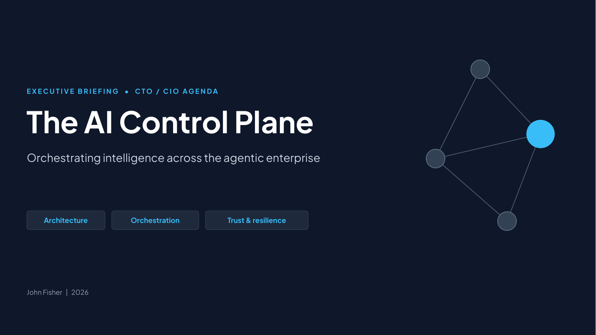

Executive deck · 2026
The AI Control Plane
Orchestrating intelligence across the agentic enterprise

About this deck
This executive briefing for CTOs and CIOs follows the handbook from the case for a control plane to a phased plan with value in every phase. It then walks through the three reference use cases and closes with the decisions for the next 90 days.
Each slide appears with its text and its speaker notes, which carry the talk track. Superscript numbers on the slides and bracketed numbers in the notes refer to the endnotes in Appendix B of the handbook.
Contents
- Why a control plane, and what it is Slides 1–8
- Architecture, orchestration and trust Slides 9–20
- From north star to plan Slides 21–29
- Use case 1: Professional services engagement launch Slides 30–38
- Use case 2: Capital markets T+1 settlement exceptions Slides 39–47
- Use case 3: Energy pipeline compressor reliability Slides 48–56
- Closing and standards dates Slides 57–58
- Notices and about the author